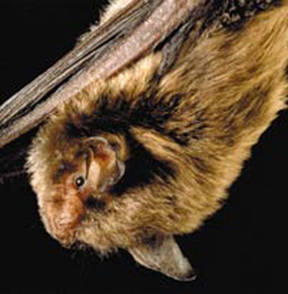
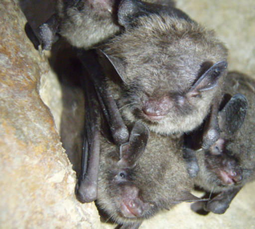
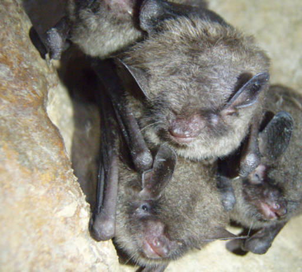

Indiana Bat
 (Photos from the U.S. Fish and Wildlife service)
(Photos from the U.S. Fish and Wildlife service)Description
The Indiana bat's fur can come in different shades of color ranging from brown to black. The species tends to have a wing span that ranges from nine to eleven inches. The bat is known to have small ears and can often be found in large groups while they are hibernating. (Service).Habitat and Location
In North Carolina the Indiana Bat can be found in Cherokee, Graham, Haywood, Rutherford, and Swain counties. It can also be found in Alabama, Arkansas, Georgia , Illinois , Indiana , Iowa , Kentucky , Michigan , Mississippi , Missouri , New Jersey , New York , North Carolina , Ohio , Oklahoma , Pennsylvania , Tennessee , Vermont , Virginia , and West Virginia in the United States (Service).
In the winter the bats like to hibernate in caves. The cave should be around 10°C when they arrive for the winter and drop down to a range of 3-6°C during mid-winter (Clawson). In the summer they like to roost in forest areas under trees that are either dead or dying (Service).
Reasons For Endangerment
There are a few different reasons that may contribute to the endangerment of the Indiana Bat. Human disturbances during winter can cause bats to use up fat that they stored for hibernation. A single disturbance could cost the bat 68 days' worth of fat. Gates put on caves have also been contributed to their endangerment. Finally the use of pesticides on insects, the main food source of this bat, is believed to also be affecting them (Clawson).
References
Clawson, R. L. "Implementation of a Recovery Plan for the Endangered Indiana Bat." Bat Conservation and Mining: a Technical Interactive Forum, Proceedings (2001): 239-47. Print.
Service, U.S. Fish and Wildlife. "Indiana Bat (Myotis Sodalis)." USFWS: Indiana Bat (Myotis Sodalis) Fact Sheet. N.p., n.d. Web. 25 Oct. 2016.
Service, U.S. Fish and Wildlife. "Species Profile for Indiana Bat (Myotis Sodalis)." Species Profile for Indiana Bat (Myotis Sodalis). U.S. Fish & Wildlife Service, n.d. Web. 26 Oct. 2016.